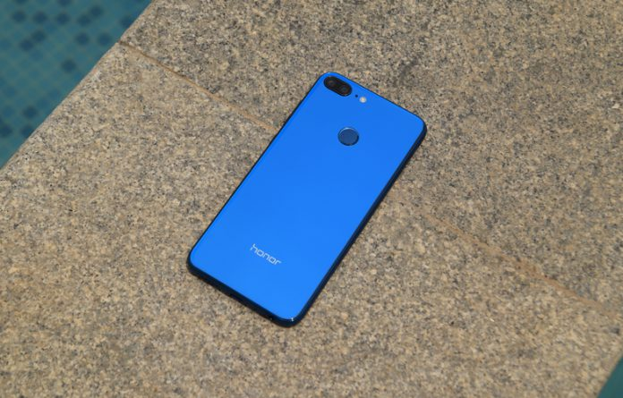

Akhir bulan Maret 2018 lalu, Honor, yang baru saja “lepas” dari induknya, Huawei, resmi mengumumkan bahwa mereka akan memasarkan smartphone mereka di Indonesia. Ada tiga smartphone yang mereka bawa sebagai langkah awal mereka masuk ke pasar Indonesia, salah satunya adalah Honor 9 Lite. Saat itu, kami sempat merilis artikel terkait preview dari smartphone tersebut. Kini, setelah mencoba smartphone tersebut selama beberapa waktu, kami akan menampilkan review lengkapnya!
Di smartphone dengan dimensi 151 x 71.9 x 7.6 mm ini, Honor menawarkan layar 5.65″ dengan panel IPS dan resolusi 2160 x 1080 piksel. Dimensi yang terbilang ringkas untuk smartphone dengan layar 5.65″ ini dimungkinkan karena rasio layar 18:9 (2:1) yang digunakan. Sebelumnya, dengan rasio 16:9, smartphone dengan dimensi seperti ini hanya menawarkan layar dengan diagonal 5.1″ – 5.2″ saja.
 Paket PenjualanYa, paket penjualan dari Honor 9 Lite yang kami terima ini dilengkapi dengan hard case di dalamnya. Paket penjualan itu dikemas dalam sebuah boks dengan warna dasar hijau. Berikut ini adalah perlengkapan yang ada di dalam boks paket penjualan tersebut, yang akan menjadi pendukung penggunaan dari smartphone ini:  * HARD CASE * ADAPTOR DAYA * KABEL USB TO MICRO USB * HEADSET * TRAY EJECTOR